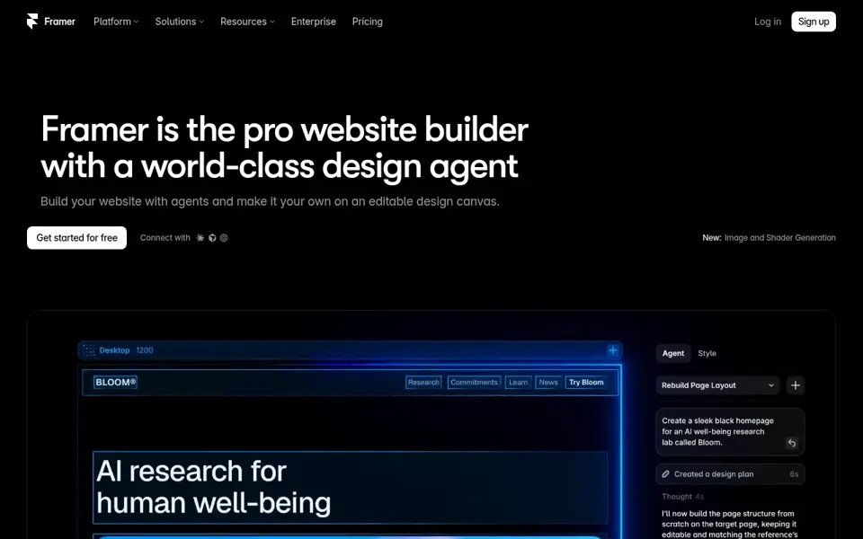

Catálogo / Webs reales / Framer
Análisis de web real · Diseño
Framer

Fondo negro absoluto, titular blanco grande y efectos de luz azul: escaparate de animaciones. Botones pequeños blancos y azules, tarjetas de cristal oscuro y mucho movimiento.
Captura hecha por nosotros el 19-11-2026 en https://www.framer.com. Análisis independiente, sin afiliación con Framer.
Colores extraídos
primary
#FFFFFFon-primary
#000000secondary
#FFFFFFaccent
#B2B2B2background
#000000surface
#0A0A0Atext
#FFFFFFmuted
#A6A6A6border
#242424Instrucción para tu IA
Crea [describe aquí tu web]. Usa el DESIGN.md que te he pasado (análisis del estilo de Framer) como referencia visual: aplica sus colores, tipografías, radios y componentes, pero con mis textos, mi logotipo y mis imágenes.
Ver el archivo DESIGN.md completo (para técnicos)
106 líneas Descargar
---
version: "alpha"
name: Framer (análisis)
description: "Análisis independiente del estilo visual de Framer (https://www.framer.com)."
colors:
primary: "#FFFFFF"
on-primary: "#000000"
secondary: "#FFFFFF"
accent: "#B2B2B2"
background: "#000000"
surface: "#0A0A0A"
text: "#FFFFFF"
muted: "#A6A6A6"
border: "#242424"
typography:
display-lg:
fontFamily: GT Walsheim Medium
fontSize: 3rem
fontWeight: 500
lineHeight: 1.1
letterSpacing: -0.02em
headline-md:
fontFamily: GT Walsheim Medium
fontSize: 1.75rem
fontWeight: 400
lineHeight: 1.2
letterSpacing: -0.01em
body-md:
fontFamily: Inter
fontSize: 1rem
fontWeight: 400
lineHeight: 1.6
letterSpacing: 0em
label-sm:
fontFamily: Inter
fontSize: 0.8125rem
fontWeight: 500
lineHeight: 1.3
letterSpacing: 0.01em
rounded:
sm: 4px
md: 8px
lg: 16px
full: 9999px
spacing:
xs: 4px
sm: 8px
md: 16px
lg: 32px
xl: 64px
components:
button-primary:
backgroundColor: "{colors.primary}"
textColor: "{colors.on-primary}"
typography: "{typography.label-sm}"
rounded: "{rounded.md}"
padding: 12px 20px
card:
backgroundColor: "{colors.surface}"
textColor: "{colors.text}"
rounded: "{rounded.lg}"
padding: 24px
link:
backgroundColor: "{colors.background}"
textColor: "{colors.secondary}"
tag:
backgroundColor: "{colors.accent}"
textColor: "{colors.background}"
rounded: "{rounded.full}"
padding: 2px 10px
caption:
backgroundColor: "{colors.background}"
textColor: "{colors.muted}"
typography: "{typography.label-sm}"
divider:
backgroundColor: "{colors.border}"
height: 1px
---
# Framer: análisis de su estilo visual
> Análisis independiente de la portada pública de [Framer](https://www.framer.com), hecho por diseño.md el 19 de noviembre de 2026. No está afiliado ni respaldado por la marca. Úsalo como referencia de estilo para tu propia interfaz, no para copiar su identidad.
## Resumen
Fondo negro absoluto, titular blanco grande y efectos de luz azul: escaparate de animaciones.
Botones pequeños blancos y azules, tarjetas de cristal oscuro y mucho movimiento.
## Colores
Fondo oscuro `#000000` con texto `#FFFFFF`. El color de acción es `#FFFFFF` (texto encima `#000000`); `#FFFFFF` y `#B2B2B2` aparecen en detalles y etiquetas.
## Tipografía
Titulares en **GT Walsheim Medium** (peso 500, unos 54px en escritorio) y texto en **Inter** a 12px. Si esa fuente no está disponible, usa **Inter** como alternativa libre de Google Fonts.
## Formas y espaciado
Radio habitual de 8px; los botones son rectángulos con radio 8px. Espaciado en múltiplos de 8px, con bloques de 64px entre secciones.
## Qué hacer y qué no
- Haz: respeta la jerarquía de un solo color de acción (`#FFFFFF`).
- Haz: usa GT Walsheim Medium solo en titulares y deja el texto en Inter.
- No hagas: copiar el logotipo, las fotografías o los textos de Framer; crea los tuyos.